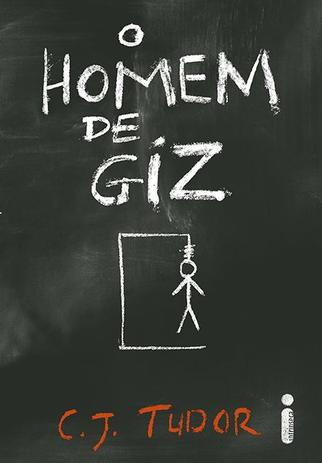
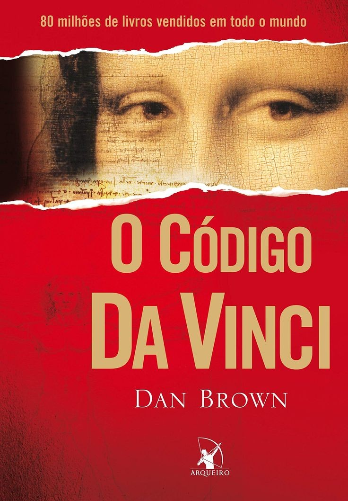
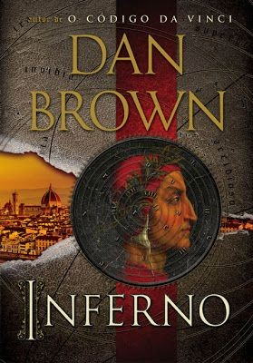

Para os amantes de um bom suspense, aquela sensação que acompanha um plot twist bem feito é, de longe, a melhor quando o assunto é cinema ou literatura. O gênero utiliza basicamente a tensão e a incerteza para manter os leitores atentos até o último parágrafo.
Mas, porque esse gênero faz tanto sucesso entre os amantes de livros? Geralmente, os melhores livros de suspense contam um mistério de forma fragmentada, o que mantém a nossa adrenalina sempre alta. Por isso, é tão difícil parar de ler esses livros.
Embora, geralmente, um livro de suspense conte as mais variadas histórias, podemos classificá-los em três subgêneros principais de suspense:
Policial: conta a história de um crime ou uma investigação fora do comum; Psicológico: mantém o foco no estado mental dos personagens, como medo, perseguição ou um estado psicótico; Sobrenatural: une o mistério com seres sobrenaturais e uma pitada de terror.
Ficou interessado em ler um livro de suspense? Então, confira os melhores livros do gênero!

- O homem de giz - C.J. Tudor (+14)
Em 1986, Eddie e os amigos passam a maior parte dos dias andando de bicicleta pela pacata vizinhança em busca de aventuras. Os desenhos a giz são seu código secreto: homenzinhos rabiscados no asfalto; mensagens que só eles entendem. Mas um desenho misterioso leva o grupo de crianças até um corpo desmembrado e espalhado em um bosque. Depois disso, nada mais é como antes.
O código da Vinci - Dan Brown (+14)
Um assassinato no museu do Louvre em Paris e pistas enigmáticas em alguns dos quadros mais famosos de Leonardo DaVinci levam à descoberta de um mistério religioso. Por mais de dois mil anos, uma sociedade secreta guarda informações que, se descobertas, poderiam comprometer o cristianismo. Robert Langdon, um professor especialista em simbologia e história, se envolve na investigação.
A mulher na janela - A. J. Finn (+16)
Anna Fox mora sozinha em uma casa que um dia abrigou sua família feliz. Separada do marido e da filha e sofrendo de uma fobia que a mantém reclusa, ela passa os dias bebendo vinho, assistindo filmes antigos e conversando com estranhos na internet. Quando uma nova família se muda para a casa do outro lado do parque, Anna fica obcecada por aquela vida perfeita. Até que certa noite, bisbilhotando com sua câmera, ela vê algo que muda tudo.A garota do lago - Charlie Donlea (+16)
Becca foi passar alguns dias em Summit Lake, uma cidade pequena e tranquila, para colocar suas ideias no lugar e para pensar em como lidaria com um grande segredo que estava guardando. Infelizmente, apenas algumas horas depois de sua chegada à Summit Lake, a jovem é brutalmente assassinada dentro da casa de seus pais.